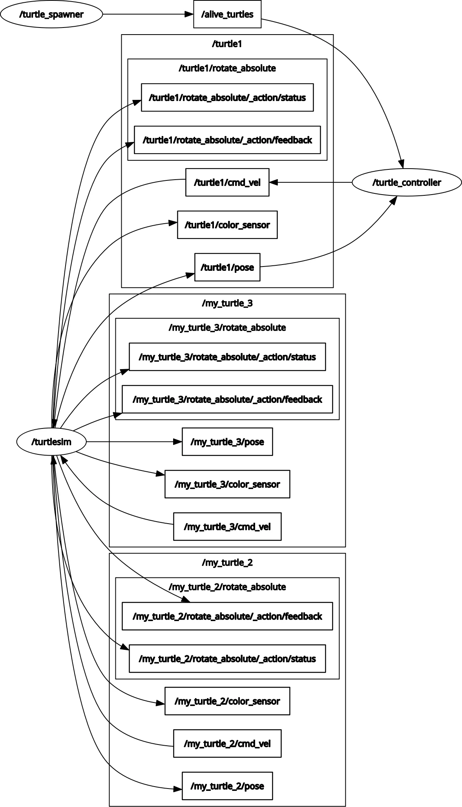
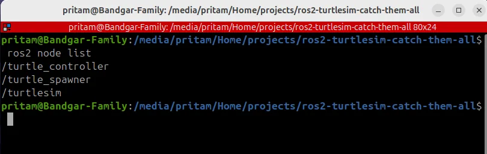
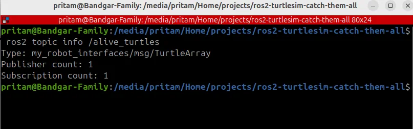

Overview
I built a Turtlesim exercise to practise communication between independent ROS 2 nodes. A spawner creates targets, while a controller selects and drives the main turtle towards them.
The project focuses on node coordination and ROS 2 interfaces, not advanced motion-planning algorithms.
Implementation
- Separated spawning and movement control into two ROS 2 nodes.
- Used pose and velocity topics, spawn/kill services, timers and custom interfaces.
- Launched the system with parameters and inspected its node/topic connections in the ROS 2 CLI and rqt_graph.
How I checked it
The spawner creates targets, and the controller uses ROS 2 messages and services to select and chase them. I inspected topics and node connections with the ROS 2 CLI and rqt_graph, then recorded the Turtlesim run to show the interaction.
Turtlesim recording
Screenshots and recordings





